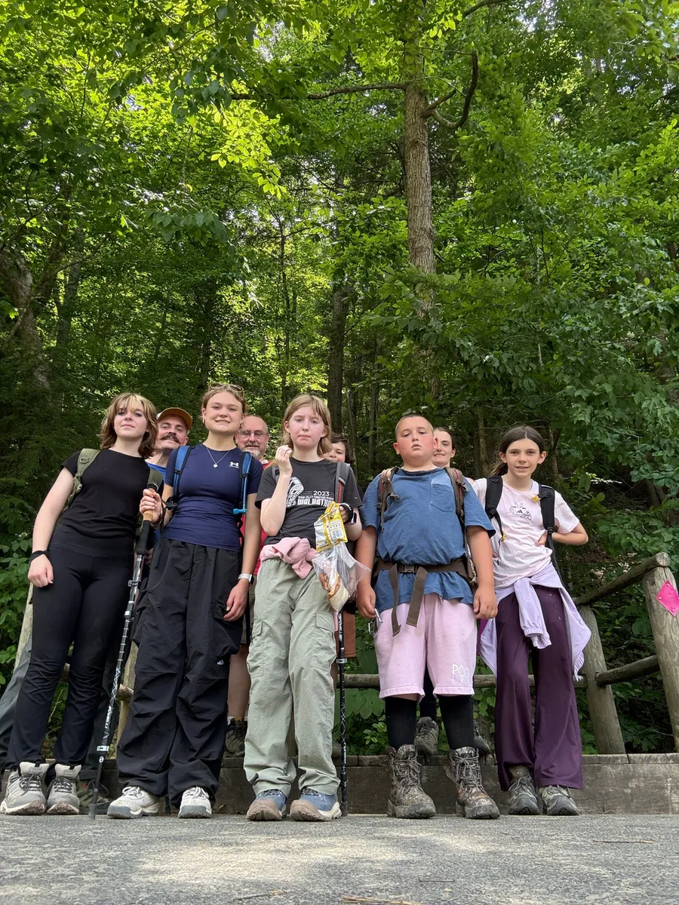
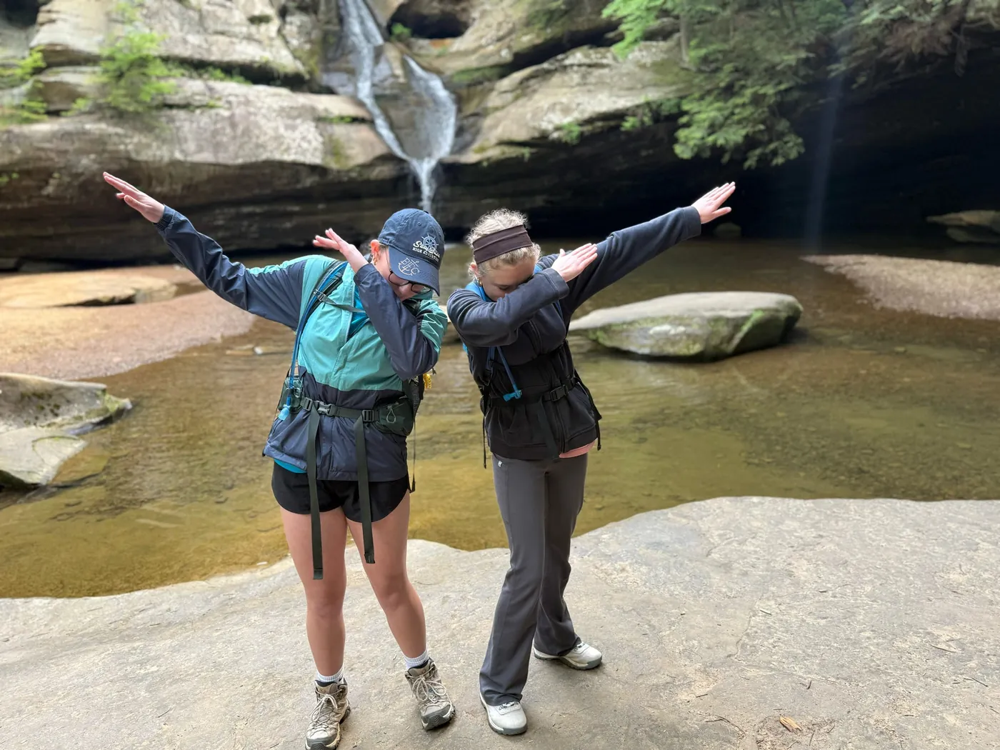
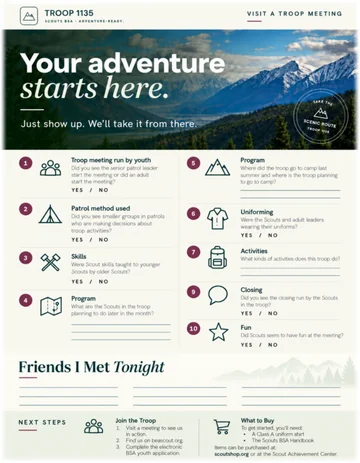

01
Character Development
Choose well.Keep a promise to your patrol. Own a mistake. Try again.
SCOUTS BSA · TROOP 1135
Adventure. Leadership. Service.
New adventures. Real friendships.
Find your place with the girls of Troop 1135.
COLLECT MOMENTS, NOT THINGS
A few favorite moments from our troop.
Pick an album. Picture yourself here.
From the troop photo album. Pick an adventure to see more.

GOOD TRAILS. EVEN BETTER COMPANY.
A LITTLE ABOUT US
Troop 1135 is a youth-led Scouts BSA troop where girls explore the outdoors, build friendships, and try something new. Plan an outing, learn a skill, or lead your patrol. You don't have to know it all to belong here.
WHY SCOUTING MATTERS
She comes for the campouts. She grows into someone who steps up, cares for others, and trusts herself.
The badges mark the journey.Visit a Meeting
Who she becomes is the why.
FOUR AIMS. A WORLD OF POSSIBILITY.
Keep a promise to your patrol. Own a mistake. Try again.
Listen to your community. Turn a need into a service project.
Build healthy habits and resilience, one trail at a time.
Plan the outing. Guide your team. Help a new Scout belong.
A WORLD OF POSSIBILITY
Explore new interests through merit badges. Take on leadership. Create a service project that matters. Eagle Scout, Scouting's highest rank, is one path you can work toward. Your journey is yours.
Explore the Eagle Scout archiveNO EXPERIENCE REQUIRED. JUST CURIOSITY.
Just show up. We'll take it from there.
A / TRY IT OUT
Come meet the Scouts, see a meeting in action, and ask questions. No experience or special equipment required. Families are welcome, and there's no commitment to join.
Click the Visit a Meeting button below, then select "Request More Information" to connect with our adult leaders and get the current meeting time and location.
Visit a Meeting
OPTIONAL. JUST FOR FUN.
Meet the Scouts, discover what makes our troop special, and collect signatures from new friends.
Download Your GuidePDF · 6 MBPrint it and bring it along — or just show up!
B / WHEN YOU'RE READY
Meet the Scouts and decide if the troop feels like your kind of adventure.
Open our official troop listing to get started.
A parent or guardian completes the application through Scouting America's official online registration process.
Reconnect with the Scouts and get ready for your next adventure together.
Once you've joined, you'll need a Class A uniform shirt and a Scouts BSA Handbook. Find them at the Scout Shop or the Scout Achievement Center.
No purchases needed before your first visit.